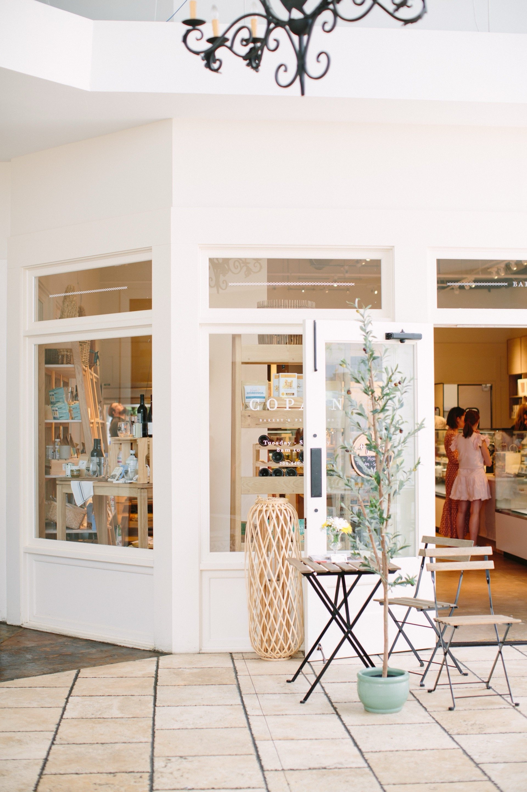
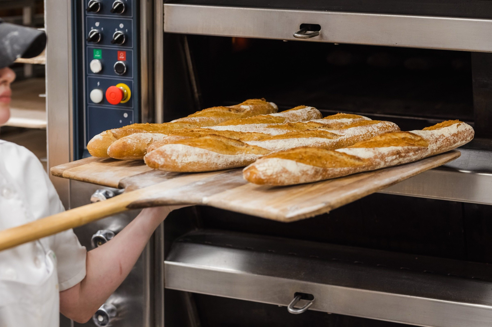
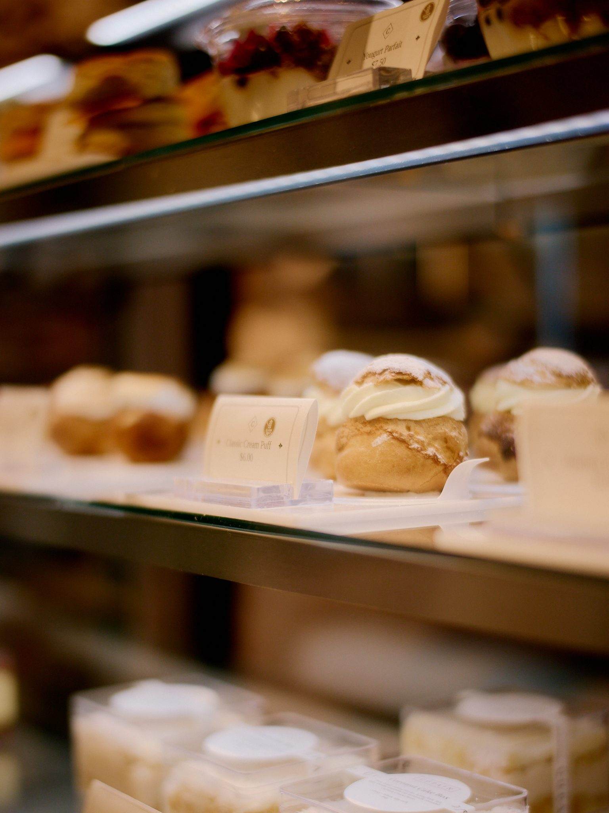
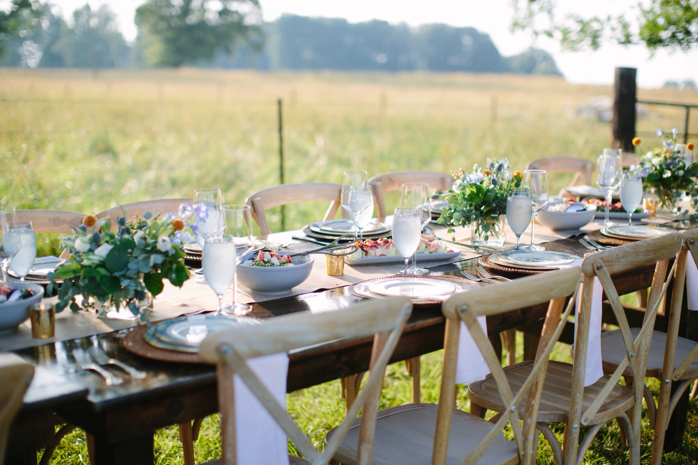
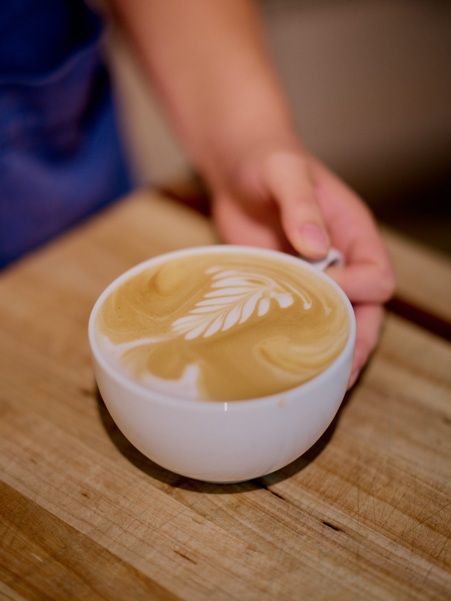

Notre Pain Quotidien
Boulangerie
Pâtisserie
Française
French Inspired · Artisan Made · Charlotte & Winston-Salem
Our Story
Our Daily
Bread
Copain is built on the belief that great bread — made slowly, with intention — is one of life's most generous gifts. Every morning our bakers arrive before the city wakes to work the dough, load the ovens, and pull the laminated pastries that fill our cases by dawn.
French in spirit, rooted in the Carolinas. We source locally where we can, bake everything in-house, and believe the table is where communities are built.

Happening Now
Order Now
Live from the Oven, Cooling Rack, and Case
Checking today's oven board.
Live statuses appear only while items are in the oven, cooling, or still within their ready window.
At Copain Today
View Full Menu
Fresh, Seasonal, and Served Throughout the Day
Find Us
Three Locations
Each location has its own character — from the bright French brasserie of SouthPark to the full dinner service at Ballantyne.

Private & Corporate
Catering &
Catering &
Private Events
From intimate breakfast boards to full-service farm dinners, we bring the Copain table to you. Inquire through our catering partner.

The Craft
Made from Scratch.
Made from Scratch.
Every. Single. Day.
Long fermentation. Stone deck ovens. Laminated doughs that take three days to make properly. We don't cut corners because great bread doesn't let you. Our bakers work through the night so you can walk in at seven and find the case full.
Live the Golden Rule
Honor Families
Give Generously
Provide Restoration
Create Healthy Growth
Add Value to Our Team

The Team
Rooted in
Rooted in
the Carolinas
"Bread is the most fundamental act of generosity — you give it to everyone at the table, without reservation."
Copain is part of the Noble Food & Pursuits family, a group of Charlotte restaurants and concepts united by a commitment to hospitality, community, and craft. We believe feeding people well is an act of care.
@copain_bakery